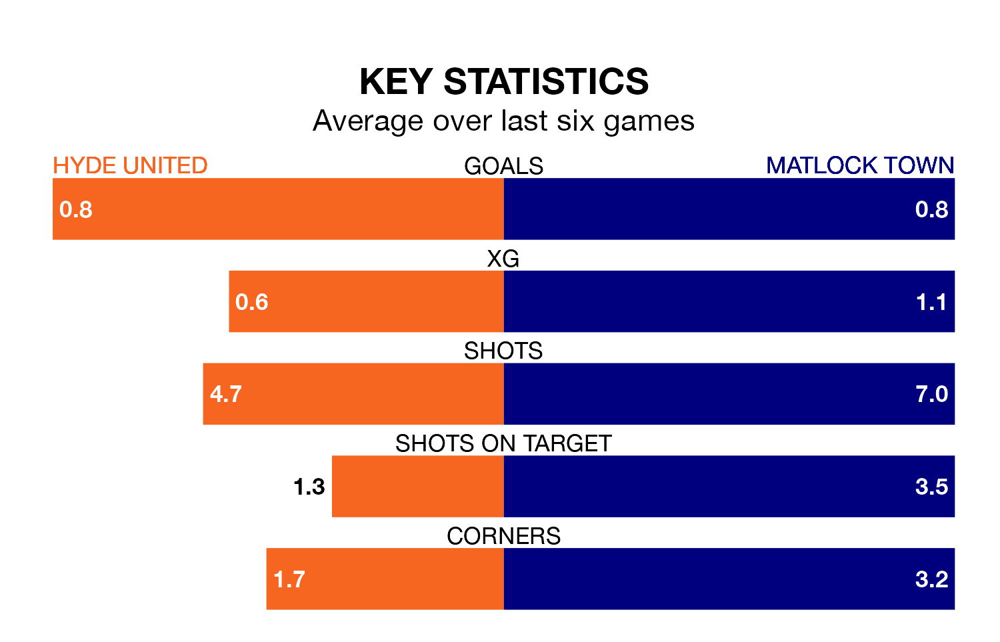

Hyde United are heavy favourites to keep all three points at home in Saturday's kick-off against Matlock Town.
Hyde, who sit fifth in the Northern Premier League with 40 games played, are priced at 1.3 to seal victory at Ewen Fields.
Sitting nine places and 20 points behind them in the table, Matlock are 6.7 to win with *Betting Company*, while the draw is at 5.0.
With 69 goals in 40 games so far this season, Hyde are scoring more than average in the league with 1.7 goals per game. And they are conceding fewer than average, letting in 47 goals at a rate of 1.2 per game.
Matlock, meanwhile, are average scorers, with 1.6 goals per game. They have conceded 1.8 goals per game.
United are in disappointing form in the Northern Premier League, with one win and two draws from their last six games.
With a win and five losses over that period, Town's form is slightly worse – they have taken three points from 18, compared to the home side's five.
In the last 10 years, Hyde and Matlock have played each other on 11 occasions. Hyde won one of them, Matlock six, and they drew four times.
On average, Hyde scored 1.3 goals and Matlock 1.6 in those matches.
Their last meeting was on November 14, when Matlock won 3-2 at home.
Hyde's last match was on April 13, a 4-1 loss against Gainsborough Trinity.
Matlock beat Guiseley 2-1 last time out, also on April 13.
Updated: 15:40 (UTC), 18/04/24